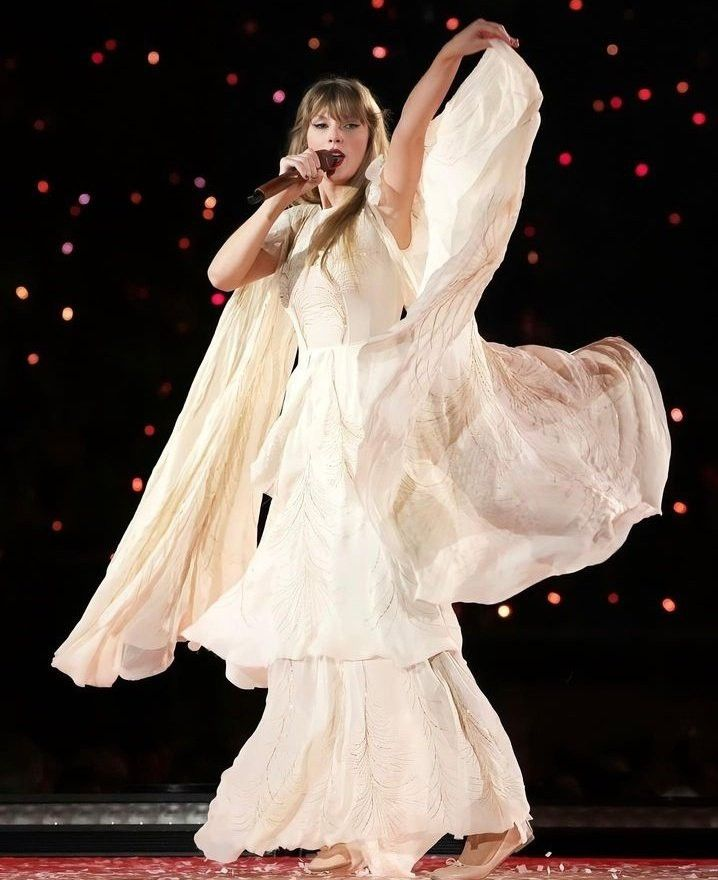

| Canciones | Duración |
|---|---|
| The 1 | 3:30 minutos |
| Cardigan | 3:59 minutos |
| The Last Great American Dynasty | 3:51 minutos |
| Exile (feat. Bon Iver) | 4:45 minutos |
| My Tears Ricochet | 4:15 minutos |
| Mirrorball | 3:28 minutos |
| Seven | 3:28 minutos |
| August | 4:21 minutos |
| This Is Me Trying | 3:15 minutos |
| Illicit Affairs | 3:10 minutos |
| Invisible String | 4:12 minutos |
| Mad Woman | 3:57 minutos |
| Epiphany | 4:49 minutos |
| Betty | 4:54 minutos |
| Peace | 3:53 minutos |
| Hoax | 3:40 minutos |
| The Lakes | 3:30 minutos |
Folklore salió en 2020 después de que la gira de Lover fuera cancelada por la pandemia. Folklore se diferencia de sus otros álbumes porque no está basado en sus experiencias propias, sino que su imaginación surgió mediante películas. Un ejemplo de esto es el triángulo amoroso de Folklore conformado por las canciones Betty, August y Cardigan. Los instrumentos que predominan son el piano, la guitarra y el violín. El disco ganó un premio Grammy al Álbum del Año.
